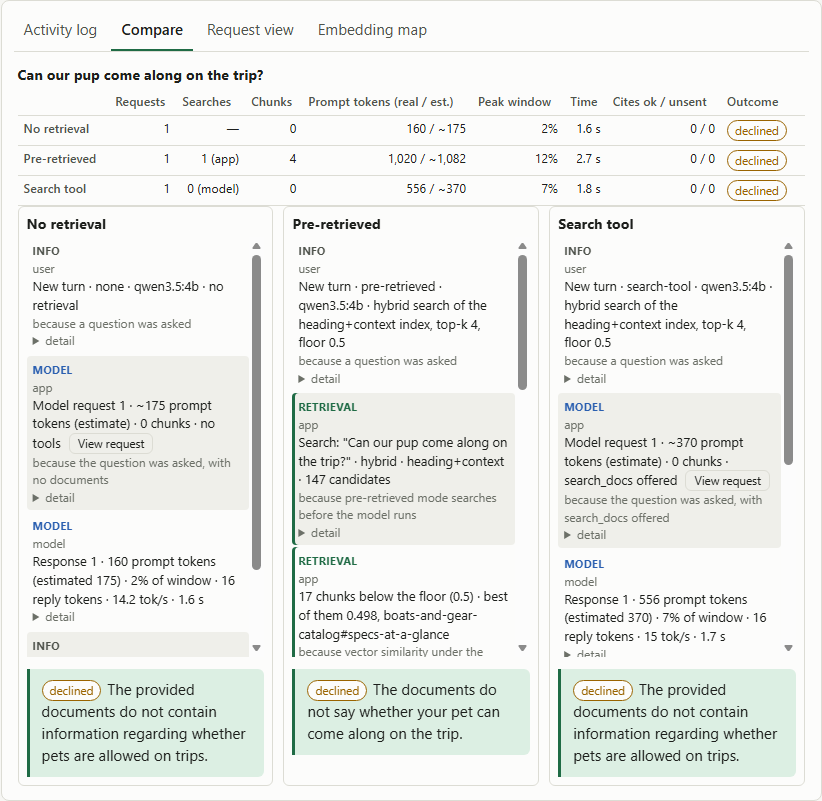

Local RAG Lab
One help assistant, three ways to ground its answers, and every retrieved chunk, score and token on screen. Runs entirely on your machine through Ollama. No API key, no hosted model.
What it is
The premise
Retrieval-augmented generation is usually taught as a box diagram: documents, embeddings, a vector database, a model. The diagram hides the part that matters to a developer: what actually lands in the model's request, and what it costs.
This lab answers customer questions for Paddle Section Supply, an invented canoe outfitter, from 25 of its documents, and shows the whole pipeline: the query that was embedded, every candidate chunk with every score, which chunks were sent and why the rest weren't, the full request with each chunk highlighted inside it, and the tokens and seconds each step took. Every answer can be grounded three ways:
| Mode | Who retrieves |
|---|---|
| No retrieval | Nobody. The model answers from what it knows, or declines. |
| Pre-retrieved (classic RAG) | The app searches before the model runs and pastes the chunks into one request. |
| Search tool (agentic RAG) | The model calls search_docs with a query it writes, and can search again. |
Both retrieval modes call the same tool, over MCP. The only difference between classic and agentic RAG is who makes the call, and the activity log shows which.

For a section-by-section tour, with code from the repo and screenshots from real runs, see How it works.
What it teaches
Six lessons, each measured on the reader's machine rather than asserted
- RAG is prompt construction. The model doesn't know the documents; the app pasted text into the request, and the request view shows exactly where.
- Retrieval quality caps answer quality. With every chunk it needed in the prompt, the model was right 40 times out of 43 and never invented. Every invented answer from a retrieval mode came from a prompt missing part of the answer.
- The modes trade differently. Pre-retrieval pays for context on every question and gets one try. The search tool costs 1.7× the prompt tokens and depends on a small model choosing to search, and searching well.
- Context is a budget. Every chunk not sent is logged with its reason, and the lab catches Ollama silently dropping messages from an overfull window.
- Embeddings capture meaning, not identifiers, and hybrid search exists for that reason. On this small corpus vector search found the exact codes too; hybrid won on split-context questions instead, and buried a paraphrase.
- A similarity score can't tell you the answer isn't there. A question the corpus can't answer still scored 0.748 against its best match, above several real answers.
What's in it
Counted in the repo and the scorecard
The corpus hides traps on purpose, listed in corpus/README.md: a 2025 rate sheet left beside the 2026 one with nothing marking it old; long sections whose answer paragraph never names its subject; long tables; exact codes; entry point codes mapped to names in one place only, so some answers need two documents; near-duplicates and decoys; and topics deliberately absent, so some questions have no answer.
Tech stack
Node · Express · Ollama · SQLite FTS5 · vanilla TypeScript · no frontend framework, no vector database
| Piece | Version | Role |
|---|---|---|
| qwen3.5:4b | Q4_K_M | The chat model: answers, calls the search tool, reranks |
| nomic-embed-text | 768 dims | Embeds chunks and queries, with its task prefixes |
| @modelcontextprotocol/server, /client, /node | 2.4.0, 2.4.0, 2.1.2 | The tool server over stdio (and HTTP for MCP Inspector), and the app's client |
| node:sqlite | SQLite 3.50.2 | The index files, and FTS5 with BM25 for keyword search |
| express | 5.3.0 | The routes and the Server-Sent Events streams |
| zod | 4.6.7 | Tool inputs and outputs, request bodies |
Vector search is a loop over the chunks in plain TypeScript: 164 chunks take well under a millisecond, and nothing about it is hidden. The README says when a real vector database becomes worth it.
Running it
Node 24+, Ollama, about 3.6 GB of models
npm install && ollama pull qwen3.5:4b && ollama pull nomic-embed-text
npm run index && npm run check-env
npm run dev # http://127.0.0.1:3400npm run compare -- "your question" runs all three modes in the terminal, and npm run eval regenerates the scorecard in about 10 minutes.
What it measured
30 questions × 3 modes, qwen3.5:4b, default settings; scored by code
| Mode | correct | declined | invented | avg prompt tokens | avg time |
|---|---|---|---|---|---|
| No retrieval | 0 | 28 | 2 | 164 | 1.6 s |
| Pre-retrieved | 20 | 7 | 2 | 1,229 | 5.1 s |
| Search tool | 21 | 6 | 1 | 2,091 | 8.2 s |
The remaining answers flagged that the 2025 and 2026 rate sheets disagree. The no-retrieval row includes a hand audit of two answers the frozen scorer misclassified. Retrieval alone: the default index found the answer's chunks in the top 4 for 21 of 27 answerable questions, and reranking with the chat model raised that to 23, at 3.9 seconds a search.
Read these as one run. A second full run matched it on 89 of 90 answers and on every rerank result; the one difference was the model choosing not to search. And the defaults were chosen on these same 30 questions, so there's no held-out set.
How it was built
Eleven steps, each ending with typecheck, the comment audit and the tests passing, and one commit
Facts about the tools were verified on the machine before any code was written, and re-verified when Ollama updated mid-build. The corpus was written and reviewed before anything was measured, so its traps couldn't be tuned to a result. The rule for picking the default index was written into the code before the retrieval scorecard first ran. The answer scorer's phrase lists were frozen before any answer existed, and when a hand audit found them wrong twice, the mistakes were recorded rather than fixed after the fact. Where a measurement contradicted the plan (vector search finding exact codes, the model declining instead of inventing, a walkthrough that predicted the wrong outcome), the plan was corrected, not the measurement.
Conventions held through the build
- Every TypeScript file opens with a comment saying what it does, why it exists and what it teaches (61 files, checked by a script).
- No API key, no outbound calls; cloud models refused by name.
- Every server on 127.0.0.1, with Host and Origin checked.
- Corpus text and model output rendered as text, never as HTML.
- A number in the docs is measured or marked as an estimate; a heuristic is labeled as one.